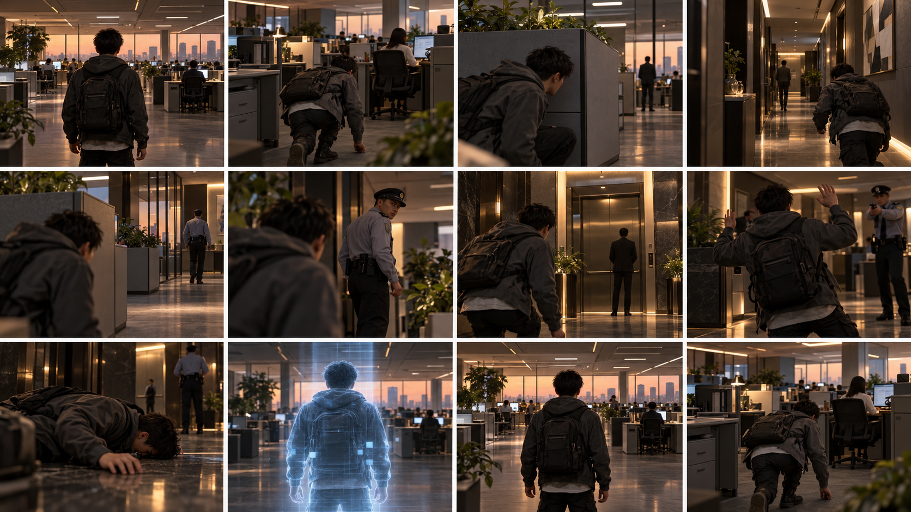

视觉稿 · 待运行时验收office_state_storyboard
office-state-storyboard-v1
10 个办公室状态使用同一角色、同一空间尺度和连续灯光；每格都能由真实任务状态机触发，不以静态分镜替代运行时画面
绑定逻辑状态
office-01office-02office-03office-04office-05office-06office-07office-08office-09office-10
必须落地的视觉状态
- camera_framing
- player_pose
- npc_perception
- cover_occlusion
- failure_feedback
- checkpoint_recovery
运行时目标
gta-reference-runtime/tests/reference_capture_matrix.gd验收出口10 个办公室状态使用同一角色、同一空间尺度和连续灯光；每格都能由真实任务状态机触发，不以静态分镜替代运行时画面
文件指纹：4d46e73c977283a63ce2985f0ddaa0fedb086986acb29104c15ddb31948ae77e